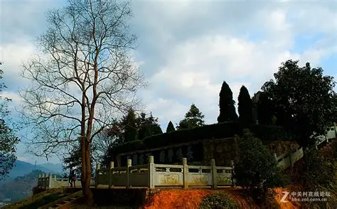
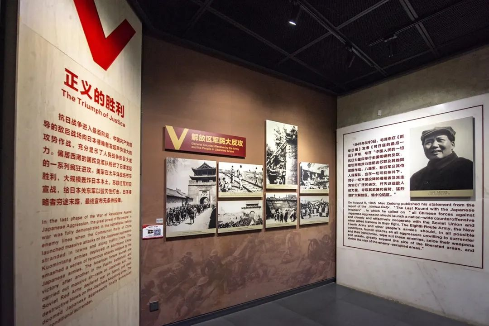

1944 年 3 月的一个深夜，神仙居龙潭峡谷的寒风裹挟着细雨，穿透龙潭村王大宝家的木质窗棂。屋内，煤油灯的微光下，浙东游击纵队伤员陈阿明的额头渗着冷汗，地下党员金美芳正用烧开的剪刀为他处理腿上的枪伤，而王大宝的妻子则在门外拿着锄头 “佯装锄地”，实则放哨 —— 这是神仙居抗日秘密联络点无数个惊险夜晚的缩影。
龙潭村因地处神仙居深处、地势隐蔽，1938 年起成为中共仙居特支的核心据点。村民王大宝是最早加入 “抗日自卫队” 的村民之一，他家的民房背靠悬崖，屋内有两个隐秘暗格：一个藏在灶台下方，用于存放情报、文件；另一个设在床板夹层，专门隐蔽伤员。1942 年日军 “扫荡” 浙东时，这里曾同时藏过 5 名伤员，王大宝和妻子每天背着竹篓，以 “上山采药” 为名，为伤员送粮、换药，竹篓底层的夹层里还藏着传递给游击队的地图与敌情简报。
1944 年 3 月 12 日，灾难突然降临。因叛徒告密，30 余名日军携带机枪，沿着神仙居山道突袭龙潭村，目标是摧毁联络点、抓捕伤员。“鬼子来了！” 放哨的少年王小虎（王大宝之子）发现敌情后，立刻按约定敲响村口的老铜钟 —— 这是联络点的警报信号。金美芳当机立断，让王大宝带着伤员从屋后的悬崖小道转移，自己则与 11 名村民组成 “自卫队”，拿着锄头、柴刀、鸟铳，在村口的竹林设伏。


日军进入竹林后，村民们先是推下预先准备好的滚石，砸得日军阵脚大乱；随后利用熟悉的地形分散袭扰，时而从东射击，时而从西呐喊，让日军误以为遭遇正规游击队。战斗持续了近 2 小时，村民们成功拖延了时间，掩护伤员安全转移，但王大宝、王小虎父子与另一名村民李阿三却在掩护撤退时不幸中弹牺牲。日军撤退前，放火烧毁了王大宝家的房屋，却始终没能找到隐藏的暗格与交通线 —— 直到 1949 年仙居解放，村民们才在废墟中挖出当年藏在灶台里的情报文件，纸张虽已泛黄，却清晰记录着那段浴血坚守的历史。
战后，幸存的村民们没有退缩。王大宝的妻子接过丈夫的 “任务”，继续为游击队传递情报；少年们组成 “小交通员队”，沿着神仙居的山间小道，把消息从龙潭村送到几十公里外的游击纵队驻地。1947 年，浙东游击纵队在淡竹乡召开 “八月会议” 时，正是这些 “小交通员” 提前勘察路线、排查敌情，确保了会议安全召开。
如今，在淡竹乡革命纪念馆里，陈列着一件特殊的展品 —— 王大宝当年用过的竹篓。竹篓的底层有一个巴掌大的夹层，边缘还留着被日军刺刀划破的痕迹。旁边的展板上，贴着一张泛黄的照片：1949 年 7 月，仙居解放时，村民们簇拥着解放军，在王大宝家的废墟前竖起了一面红旗，红旗上 “军民同心” 四个大字，正是对这段红色历史最生动的注解。
返回